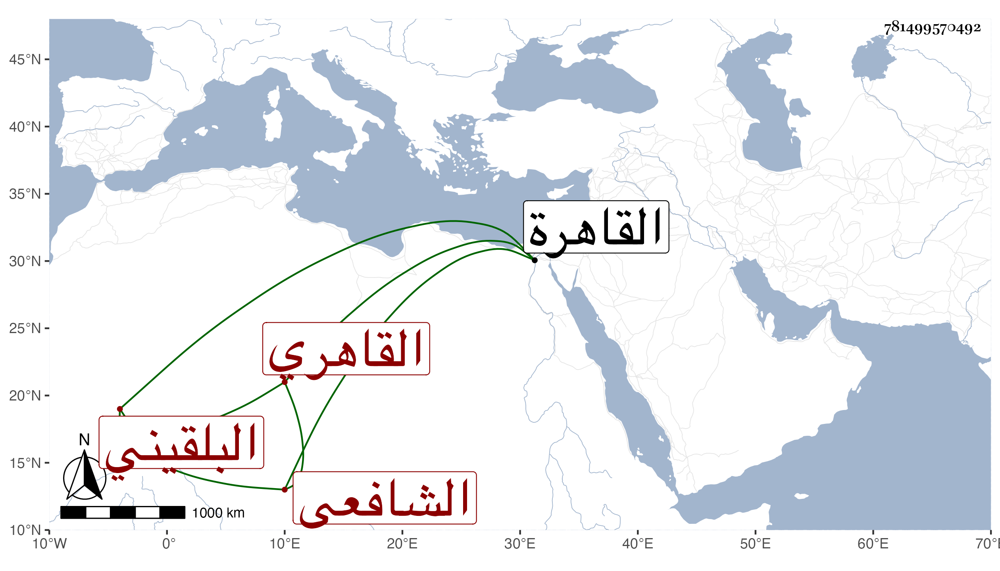

0902Sakhawi.DawLamic.ITO20230111-ara1.EIS1600.781499570492
Biography ID: 781499570492
439
محمد بن محمد بن عمر بن رسلان بن نصير التقي بن البدر بن السراج البلقيني الأصل القاهري الشافعي والد الولوي أحمد الماضي وجده والآتي ولده الآخر فتح الدين محمد . ولد في سنة تسع وثمانين وسبعمائة بالقاهرة . ومات أبوه وهو طفل فكفله جده وحفظ القرآن وصلى به التراويح على العادة وله نحو عشر سنين ودرس في المنهاج وحضر دروس جده وسمع عليه جزء الجمعة للنسائي وغيره ولازم الكمال الدميري وعمه الجلال البلقيني ونبه قليلا حين ولايته القضاء وإلا فقد كان نشأ في إملاق وأكثر عن البرهان البيجوري وكذا أخذ عن الشمس الشطنوفي والشهاب الطنتدائي وآخرين وسمع على الجمال بن الشرائحي وداخل الكبار وعرف بصحبة الزين عبد الباسط وتمول بملازمته جدا في مدة يسيرة وحصل الوظائف والإقطاعات والرزق وناب في القضاء بمنية الأمراء وغيرها من الضواحي ودرس بعد موت عمه في الفقه بجامع طولون وكذا بالحجازية مع خطابتها ومشيخة الميعاد بها وحدث بجزء الجمعة سمع منه الفضلاء ، وأنشأ دارا هائلة بالقرب من مدرسة جده مات قبل تمامها ، وكان ذكيا ظريفا حسن النغمة على الهمة خليعا ماجنا . مات في آخر يوم الثلاثاء حادي عشر شوال سنة ثمان وثلاثين ودفن عند أبيه وجده وأوصى بعمارة ميضأة وبغير ذلك من القرب . ذكره شيخنا في إنبائه باختصار عما تقدم قال وسيرته مشهورة وسبب تقدمه عند الزيني مشهور رحمه الله وعفا عنه وإيانا .
